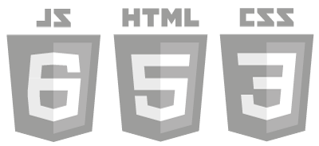

We believe, quite simply, that everyone should have access to the basic resources that they need to achieve their education.
In pursuit of making education accessible, Siyavula has produced book titles spanning Mathematics and Science subjects from Grades 4-12. These are high-quality, curriculum-aligned Open Educational Resources. Releasing them under a Creative Commons licence lowers the legal barrier to sharing them, while making them available in multiple formats lowers technical barriers to accessing them.
We're proud of the fact that you can access our books for free online (even from the most basic internet-enabled phone), as an ePub, or a PDF file ready for printing.
That said, a school’s mandate is to provide an effective learning experience and, while it is important to us to make good content easily accessible, we don't believe digital content is necessarily any better than paper.
To see any really beneficial use of technology in education effective pedagogical approaches must be developed and put in place.
Rather than developing technology for technology’s sake, Siyavula starts with the foundations of good teaching and learning and then works on developing the best tools to support them.
In addition to having access to pedagogically-sound content and instruction, practice is essential to learning - most particularly in Mathematics and the Sciences. Research, theory and experience have shown that to facilitate the most effective learning, practising for mastery needs to be:
{{service.desc}}
{{service.desc}}
Using this approach, we have developed technology and tools to enable effective, efficient and personalised practice for mastery.
We build sophisticated tools and programs, but make sure they remain device independent and embrace open standards to maximise reach.
While access to computers may sometimes be limited, mobile phone penetration in Africa is high and provides the continent’s primary access to the web. We pay careful attention to making sure our book content and Intelligent Practice can be accessed from even the most basic internet-enabled cellphone.
